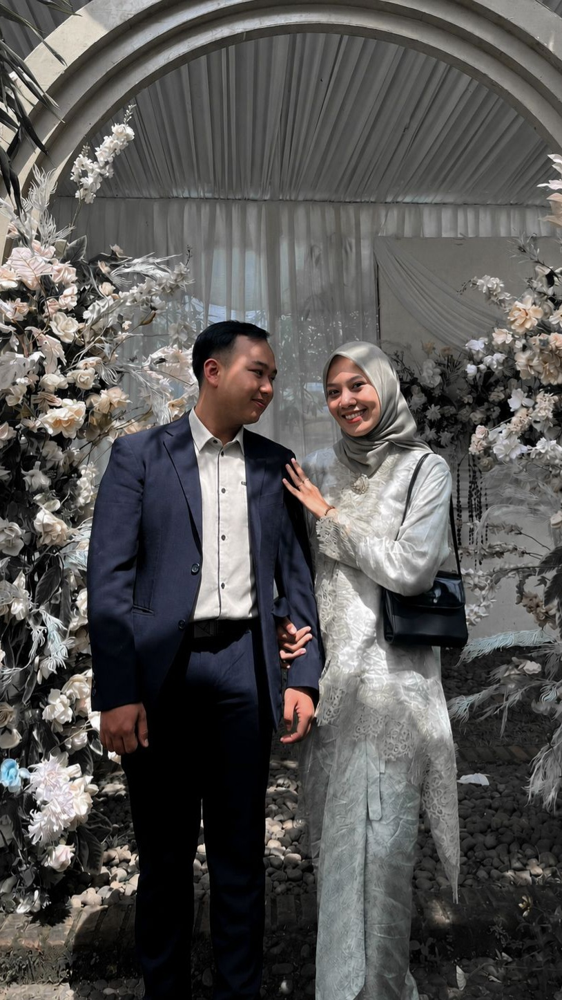
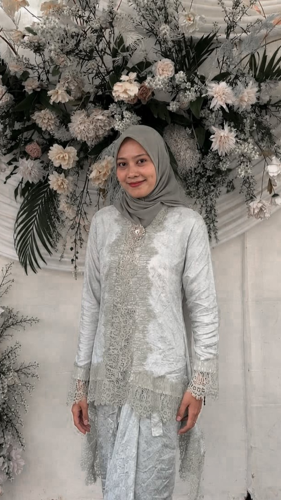

The Wedding Of
Lina & Sarif
Minggu, 01 Nov 2026
Ayat Suci
وَمِنْ ءَايَٰتِهِۦٓ أَنْ خَلَقَ لَكُم مِّنْ أَنفُسِكُمْ أَزْوَٰجًا لِّتَسْكُنُوٓا۟ إِلَيْهَا وَجَعَلَ بَيْنَكُم مَّوَدَّةً وَرَحْمَةً ۚ إِنَّ فِى ذَٰلِكَ لَءَايَٰتٍ لِّقَوْمٍ يَتَفَكَّرُونَ
"Dan di antara tanda-tanda kekuasaan-Nya ialah Dia menciptakan untukmu isteri-isteri dari jenismu sendiri, supaya kamu cenderung dan merasa tenteram kepadanya, dan dijadikan-Nya diantaramu rasa kasih dan sayang."
QS. Ar-Rum: 21
Maha Suci Allah
بِسْمِ اللَّهِ الرَّحْمَنِ الرَّحِيم
Assalamu'alaikum Warahmatullahi Wabarakatuh
Dengan memohon rahmat dan ridho Allah SWT, kami mengundang Bapak/Ibu/Saudara/i untuk hadir pada acara pernikahan kami:

Rangkaian Acara
Waktu Bahagia
Akad Nikah
Resepsi Pernikahan
Sebuah Perjalanan Pulang 🤍
Kisah Cinta Kami
Setiap kisah memiliki takdirnya sendiri. Bagi kami, cinta bukan sekadar tentang pertemuan, tetapi tentang saling menemukan arah untuk pulang. Inilah lembaran perjalanan kami, dari titik temu pertama hingga merangkai janji sehidup semati.

Awal Pertemuan 🤍
Jutaan manusia berlalu-lalang di bumi, namun Allah mengatur satu titik temu yang tak pernah kami rencanakan. Kami hanyalah dua orang asing dengan jalan hidup yang berbeda, hingga takdir menyapa dalam sebuah perjumpaan sederhana.
Tawa pertama yang tercipta hari itu, tanpa kami sadari, adalah benih dari sebuah cerita panjang yang kelak kami sebut sebagai 'Rumah'.
Tentang Bertahan ✨
Cinta bukanlah sekadar kalimat manis, melainkan seni untuk tidak saling melepaskan. Kami melewati hari-hari di mana badai ego dan keraguan menguji seberapa kuat genggaman tangan ini.
Namun, di setiap titik rapuh itu, kami menemukan alasan yang jauh lebih besar untuk tetap tinggal.
Kami akhirnya memahami, belahan jiwa bukanlah dia yang tak pernah menghadirkan tangis, melainkan dia yang tak akan pernah membiarkanmu menangis sendirian.

Menuju Hari Bahagia 🌙
Waktu akhirnya menjawab segala doa dan peluh kesabaran. Kini, kami berdiri di gerbang janji suci, bersiap menukar kata 'aku' dan 'kamu' menjadi 'kita' di hadapan Sang Pemilik Cinta.
Ini bukanlah akhir dari pencarian, melainkan lembar pertama dari ibadah yang teramat panjang.
Mohon doakan kami, agar cinta yang mengawali langkah ini, kelak mengantarkan kami bersatu kembali hingga ke surga-Nya. 🤍
Doa Pengantin
بَارَكَ اللَّهُ لَكَ وَبَارَكَ عَلَيْكَ وَجَمَعَ بَيْنَكُمَا فِيْ خَيْرٍ
"Semoga Allah memberkahimu di waktu bahagia dan memberkahimu di waktu susah, serta semoga Allah mempersatukan kalian berdua dalam kebaikan."
(HR. Abu Daud)
Momen Indah
Galeri Kami



Wedding Gift
Doa restu Anda merupakan karunia yang sangat berarti. Namun, jika Bapak/Ibu/Saudara/i ingin memberikan tanda kasih, dapat melalui fitur di bawah ini:
9017 9960 7896
a.n Neng Lina Apriliani

4461 5674 90
a.n Sarif Arifin
0896 5761 6155
a.n Sarif Arifin
Kirim Kado Fisik
Penerima: Neng Lina Apriliani / Sarif Arifin
Kp. Nagrog Jeruk, Rt/Rw 02/08, Sukamenak, Wanaraja, Kabupaten Garut, Jawa Barat
Kehadiran & Doa